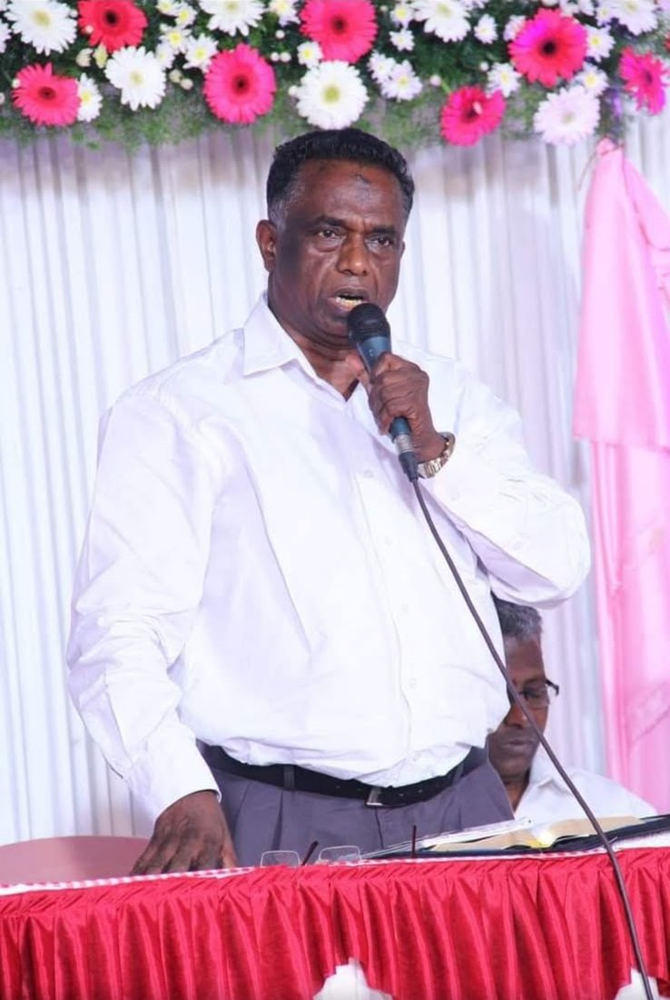
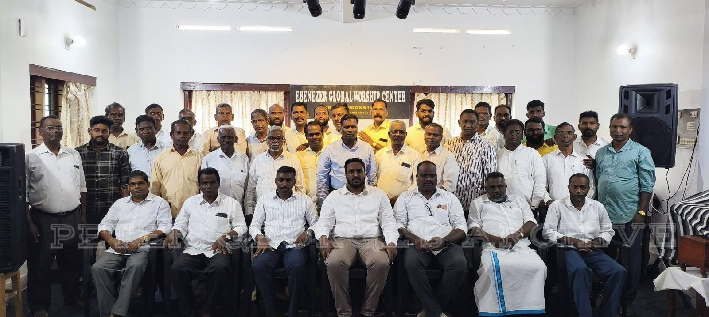
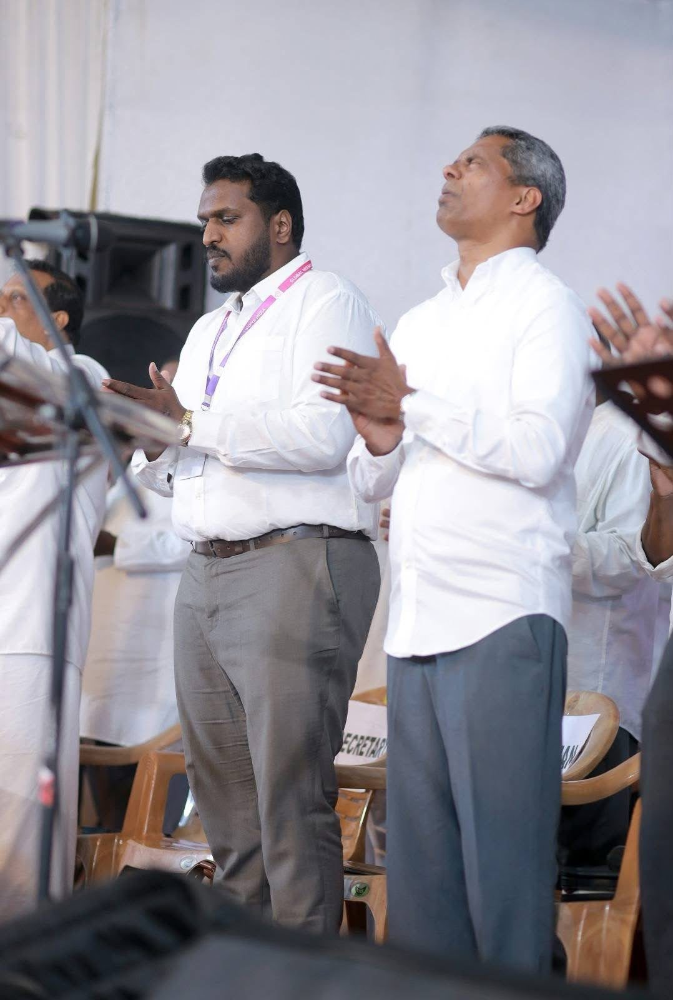
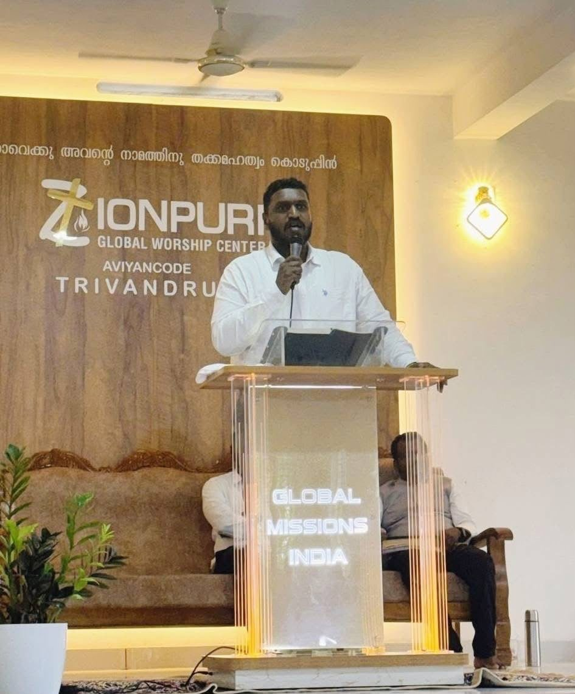
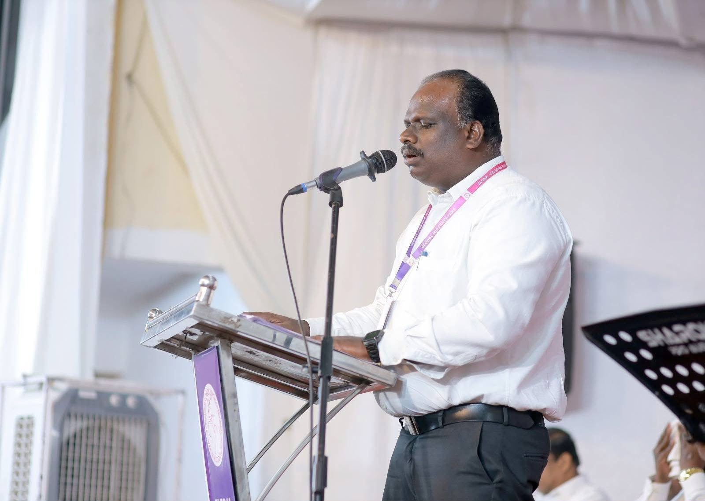
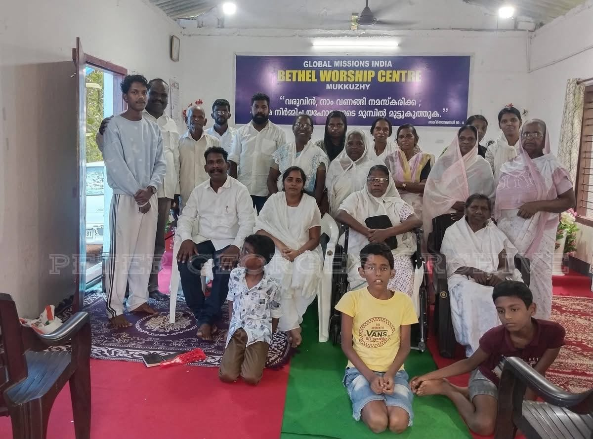
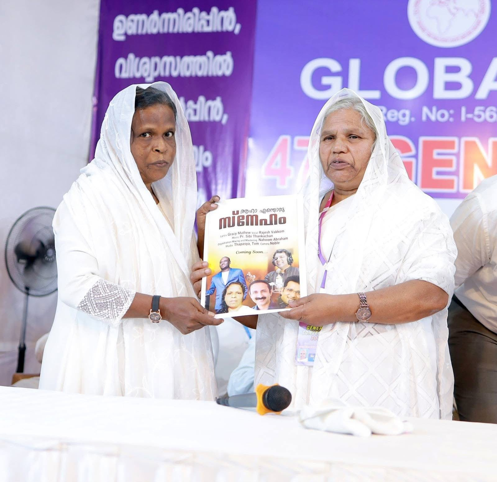
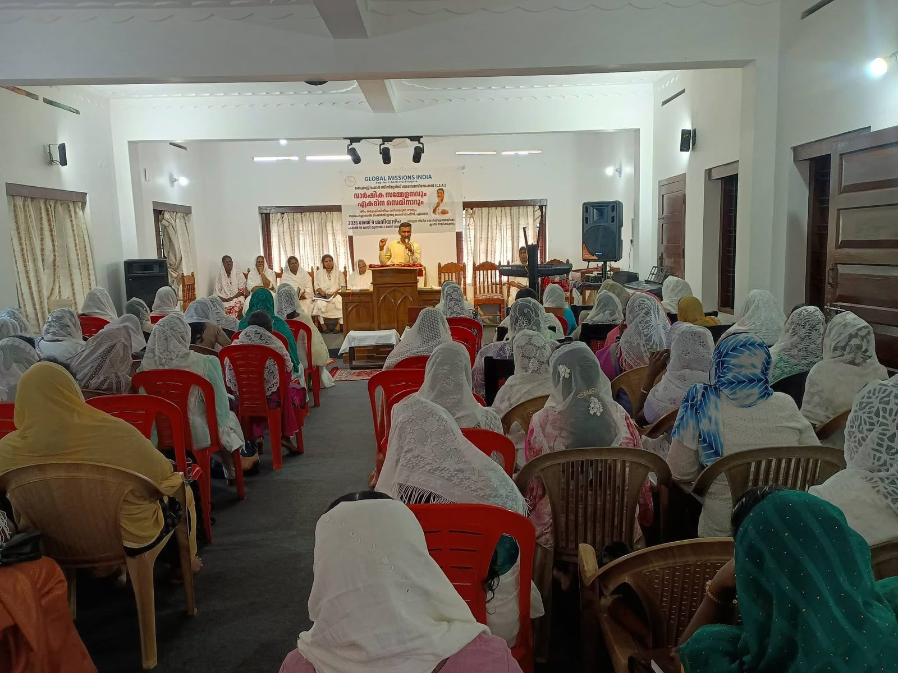
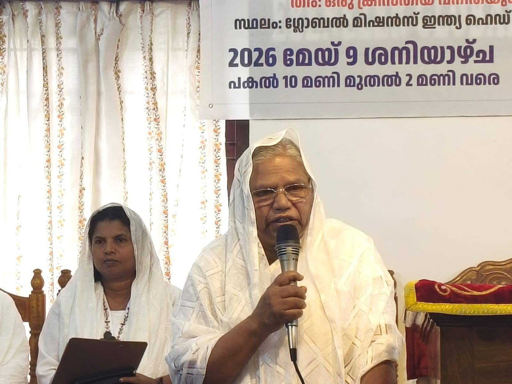
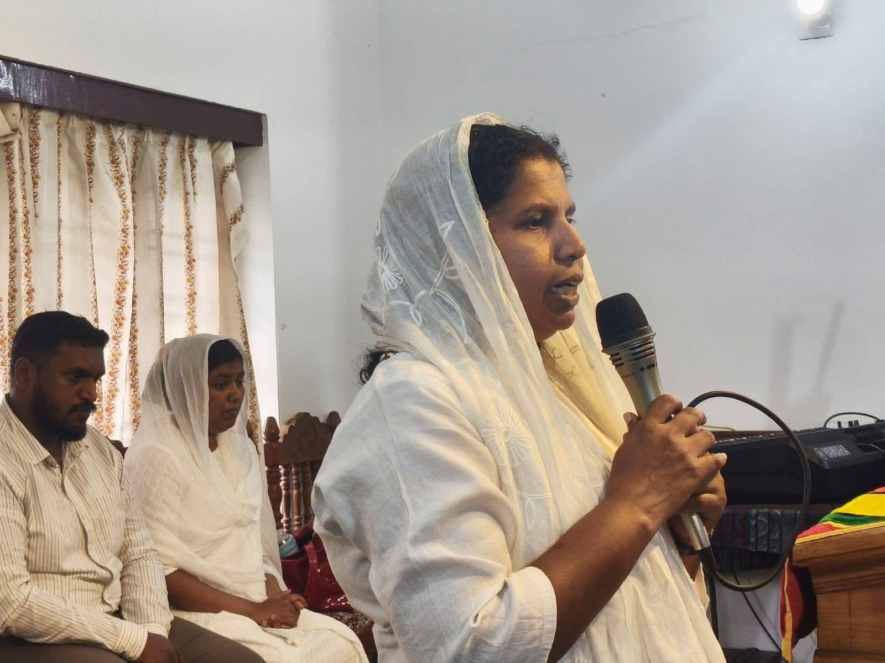

Our mission
To carry the Gospel of Jesus Christ to people and places where it has not yet been heard, to plant worshipping churches there, and to make disciples who are filled with the Holy Spirit.
A Pentecostal mission from Elappara in the hills of Idukki, Kerala, preaching Christ in the regions beyond.
Global Missions India began in Elappara, a tea-estate town in the Idukki hills, with one burden: that people who have never heard of Jesus Christ would hear.
The mission was founded by Rev. P. M. Baby and registered as Global Missions India (Reg. No. I-56/84), with its head office at Elappara P.O. From that one hill town it has grown into a family of worship centres, pastors and believers across Kerala, from Bethel Worship Centre at Mukkuzhy to Zionpuri Global Worship Center at Aviyancode, Thiruvananthapuram.
We hold to the full Gospel: salvation by grace through faith in Jesus Christ, baptism in water and in the Holy Spirit, a holy life, prayer for the sick, and the soon return of our Lord.


Pastors of Global Missions India at Ebenezer Global Worship Center, gathered for fellowship, prayer and counsel.
“To preach the Christ in the regions beyond, where 700 million have never heard.”
The calling of Global Missions India, after 2 Corinthians 10:16
To carry the Gospel of Jesus Christ to people and places where it has not yet been heard, to plant worshipping churches there, and to make disciples who are filled with the Holy Spirit.
A Spirit-filled church in every village we reach: families rooted in the Word, pastors trained and cared for, children who grow in Jesus, and believers who go on to reach the next village.
ഉണർന്നിരിപ്പിൻ, വിശ്വാസത്തിൽ നിലനിൽപ്പിൻ, പുരുഷത്വം കാണിപ്പിൻ, ശക്തിപ്പെടുവിൻ.
Watch, stand fast in the faith, be brave, be strong. 1 Corinthians 16:13, theme of the 47th General Convention
Grace and peace to you in the name of our Lord Jesus Christ.
When Rev. P. M. Baby began this work from Elappara, the call was simple: to preach Christ in the regions beyond, where His name has not yet been heard. Four decades later that call has not changed. It has only grown louder.
Every January we gather for the General Convention, and every year I see the same thing: families who walked in carrying burdens walk out carrying hope. In our worship centres, in open-air meetings on village roads, in Vacation Bible School and in the prayers of our sisters, the Holy Spirit is still at work.
Our theme this year is “Stand fast in the faith, be strong.” I invite you to stand with us in prayer, in fellowship, and in carrying the Gospel further than we have gone before. And if you need prayer, write to us. You are not alone.
In His service,
Pr. Peter George
15–18 Jan
Four days of worship, preaching and prayer for the whole mission, under the theme “Stand fast in the faith, be strong.”
9 May
Saturday, 10 am to 2 pm at the Global Missions India head office, Elappara.
11–13 May
Monday to Wednesday, 9 am to 12:30 pm at Global Missions India, Elappara. Transport is arranged. Call 96053 27757 for details.

Worship at the convention Pr. Peter George preaching Sisters at the convention
Zionpuri, Aviyancode
Preaching the Word
Bethel, Mukkuzhy Pastors’ fellowship
CSA song release
Women’s meeting
Women’s meeting, 9 May
Testimony Open-air meeting VBS 2026Tell us what is on your heart. Our pastors will pray with you, and you can ask us to keep it confidential.
“The prayer of a righteous person is powerful and effective.”
James 5:16
Prefer to talk? Call or WhatsApp +91 96053 27757.
+91 96053 27757 Message us on WhatsApp Directions to Elappara